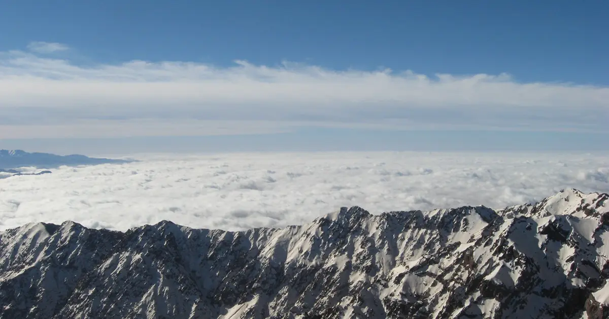

تقارير التلج · توقعات التلج
تقارير يومية ديال التلج للي كيتزلجو: فين كاين التلج، شنو جاي، وفين تمشي تتزلج، من الخريطة ديال التلج ديال SnowScope ومحطات القياس. كل رقم جاي من المعطيات ديال داك النهار.


هاهي الخرائط الجديدة ديال جوج سيمانات الجايين فالأطلس (المغرب)، من 13 نونبر حتى ل 26 نونبر: التلج الجديد المتوقع على الأرض، مقري من جوج الموديلات …

تقرير التلج فالأطلس (المغرب)، 12 نونبر. المحطات ديال التزلج فالأطلس اليوم: حتى تلج فالبيستات. التلج غير فالقمم اللي فالفوق: تقريبا 40 كم² ديال الأرض …



تقريبا 65 مم فوق Toubkal حتى ل 12 نونبر، ولكن علو 0 °C كيبقى قريب من 4,000 م: الشتا ف Oukaïmeden وفالوديان، والتلج غير فالفوق.

المحطات ديال التزلج فالأطلس مافيهومش التلج اليوم. الموديل ديال التلج ديالنا كيلقى التلج غير فالقمم العالية: تقريبا 80 كم² ديال الأرض اللي فيها التلج، …